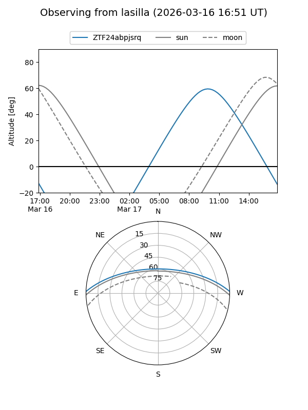
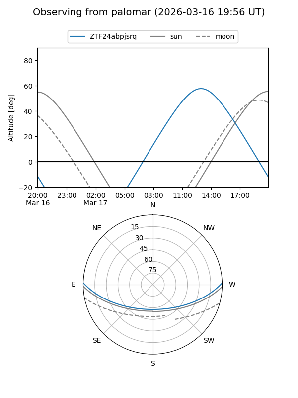

ZTF24abpjsrq
Target ZTF24abpjsrq at 2026-03-16 14:30
Aliases and brokers:
FINK: link
Lasair: link
ALeRCE: link
alt names
ZTF24abpjsrq (ztf,fink_ztf)
Coordinates:
equatorial (ra, dec) = 252.1944,+1.21887
equatorial (HMS+DMS) = 16:48:46.66,+01:13:07.94
galactic (l, b) = (18.9845,+27.61365)
Flags:
Photometry:
last ztfg=16.52
1 ztfg detections
Lightcurve
Visibility


Additional plots